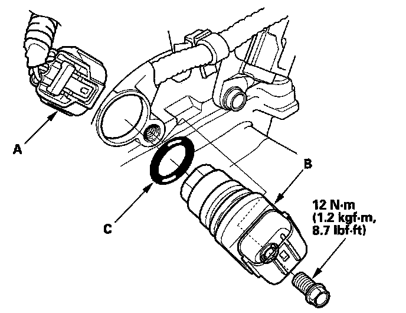

CMP Sensor A Replacement
CMP Sensor A Replacement1. Remove the air cleaner.

2. Disconnect the CMP sensor A 3P connector (A).
3. Remove CMP sensor A (B) from the intake camshaft side of the cylinder head.
4. Install the parts in the reverse order of removal with a new O-ring (C).